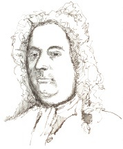

İflah olmaz derecede sosyal ve kozmopolit bir adam olan George Frideric Handel (1685-1759), Johann Sebastian Bach’la birlikte, geç barok dönemin en iyi bestecisiydi. 1685 yılında, küçük bir Alman kasabası olan Halle’da yaşayan Katolik bir ailenin çocuğu olarak dünyaya geldi. İlk iki operasını yirmi yaşına gelmeden yazdı. Sonra Katolik ayinleri için Latince parlak koro parçaları bestelemeye başladı.

1707 ile 1711 yılları arasında Handel, melodi duygularıyla üzerinde büyük etki bırakan büyük İtalyan bestecileri Antonio Vivaldi, Arcangelo Corelli ve Domenico ve Alessandro Scarlatti ile içip eğlenerek vaktini kuzey İtalya’da geçirdi. İtalya’dan –İngiliz kraliyetine varis olan– Hanover Seçmen Prensi’nin sarayında kabul ettiği bir görev sebebiyle ayrılmasından sonra Handel, yeni işverenini, kendisini de beraberinde bir yıllığına Londra’ya seyahate götürmesine ikna etti. Oradayken Handel, İngiliz halkına operaları sevdirmeye başladı. Rinaldo (1711), onun özel olarak Londra için yazdığı ilk operaydı ve İtalyanca olmasına rağmen muazzam bir başarı elde etti. Pek çok eseri; Acis ve Galatea (1718), Radamisto (1720) ve Jül Sezar (1724), bu başarıyı takip etti. Bu eserler onu, yeni açılan ve İngiltere’nin en iyi operalarının sahnelendiği Kraliyet Müzik Akademisi’nin kralı yaptı.
Hanover Seçmen Prensi, nihayet 1717’de Londra’ya I. George olarak tacı almaya geldiğinde, Handel, yeni hükümdarın onun Londra’da Hanover’dan çok daha fazla zaman geçirmiş olmasına kızacağı konusunda endişeliydi. Bir rivayete göre, kralın beğenisini tekrar kazanmak için ünlü Su Müziği süitini besteledi. Kral, Handel’in müziğinin ne kadar harika olduğunu duyunca maaşını iki kat arttırdı.
Handel’in İngiltere’deki son dönemleri boyunca, odağını operadan oratoryoya –içeriği genelde dini olan, dramatik ama solocular, korolar ve orkestra için sahnelenmeyen bir tür– kaydırdı. Ölmeden önce otuzdan fazla oratoryo tamamladı. Çok sevdiği Messih (ilk kez 1742’de sahnelendi), sonra Samson (1743), Semele (1744), Solomon (1749) ve diğerlerini yazdı. 1759’da Londra’da öldü.
EK BİLGİLER:
1. Handel’in babası ilk başta onun bir müzisyen değil, hukukçu olmasını istemişti.
2. Handel’in Messiah oratoryosu, her yıl Noel zamanı dünya genelinde sayısız kilisede sahnelenir.
3. Handel’in İngiltere’deki ilk operası olan Rinaldo’ya, ormanda geçen bir sahnesi sırasında salınan canlı serçeler de dahil edildi.